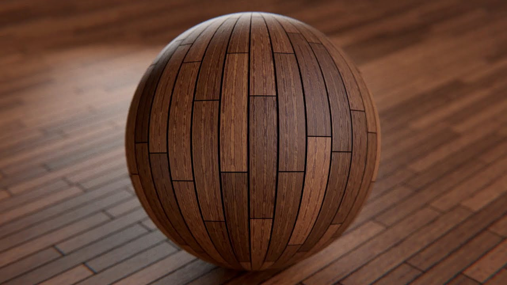

If you have ever played a video game, you have seen the use of textures. Its like wrapping an image on top of you geometry, to make it look likes it has more detail that it actually does. Instead of realistically simulating how objects are shaded and how objects interact with them and the tiny bumps and ridges that are otherwise required to make a convincing illusion of a "surface". Take this for example.
The sphere in this image is really just an infinitely smooth spherical object with an image "wood" wrapped over the sphere.
After reading this blog post and going through the attached code, you will understand the technique used by rendering programs to apply textures, and be able to write your own program to apply a texture onto a triangle ! This is what you will be making by end of this page.